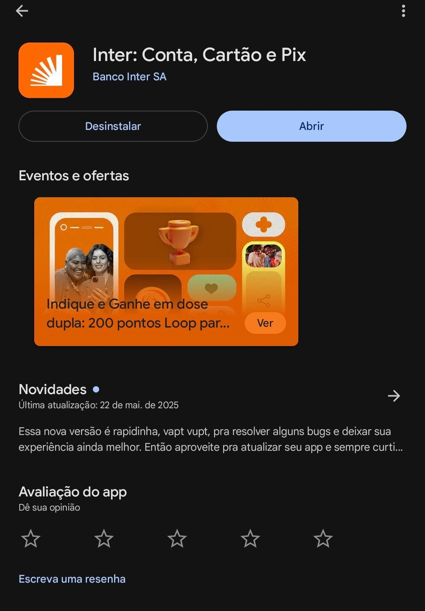

Como usar aplicativos de banco com segurança
Neste tutorial completo, você vai aprender passo a passo como instalar, configurar e usar aplicativos de banco no seu celular, realizando operações com segurança e evitando golpes.
Passo a Passo Completo
Baixar o aplicativo
Vá até a loja de aplicativos do seu celular (Google Play para Android ou App Store para iPhone) e pesquise pelo nome do seu banco. Certifique-se de que está baixando o aplicativo oficial - verifique o nome do desenvolvedor que deve ser o nome do seu banco.
Exemplo usando o banco Inter:
Fazer o primeiro acesso
Ao abrir o aplicativo pela primeira vez, você precisará fazer o cadastro. Geralmente será necessário:
- Inserir o número da sua conta e agência
- Cadastrar uma senha forte (use números e letras)
- Registrar seu celular para receber códigos de segurança
Navegar pelo aplicativo
Explore o aplicativo para conhecer suas funcionalidades principais:
- Saldo e extrato
- Transferências entre contas
- Pagamento de contas e boletos
- Cartões e limites
- Investimentos (se disponível)
Dica de Segurança
Nunca compartilhe sua senha ou códigos recebidos por SMS com ninguém. Os bancos nunca pedem essas informações por telefone, e-mail ou mensagem. Desconfie de qualquer mensagem pedindo para atualizar seus dados ou informando bloqueios na conta.
Fazer uma transferência
Para transferir dinheiro para outra conta:
- Selecione a opção "Transferência" no menu
- Escolha o tipo de transferência (para mesma instituição ou TED/DOC)
- Informe os dados da conta destino (banco, agência, conta e nome)
- Confira cuidadosamente os dados antes de confirmar
- Autorize com sua senha ou biometria
Pagar um boleto
Para pagar contas ou boletos:
- Selecione "Pagamentos" no menu
- Escolha "Pagar boleto"
- Use a câmera para ler o código de barras ou digite os números
- Confira os dados e valor
- Autorize o pagamento